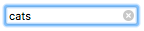

At this point, let's look at some useful techniques you can apply to your search forms.
At this point, let's look at some useful techniques you can apply to your search forms.{{HTMLElement("input")}} elements of type search are text fields designed for the user to enter search queries into. These are functionally identical to text inputs, but may be styled differently by the {{Glossary("user agent")}}.
| {{anch("Value")}} | A {{domxref("DOMString")}} representing the value contained in the search field. |
| Events | {{domxref("HTMLElement/change_event", "change")}} and {{domxref("HTMLElement/input_event", "input")}} |
| Supported Common Attributes | {{htmlattrxref("autocomplete", "input")}}, {{htmlattrxref("list", "input")}}, {{htmlattrxref("maxlength", "input")}}, {{htmlattrxref("minlength", "input")}}, {{htmlattrxref("pattern", "input")}}, {{htmlattrxref("placeholder", "input")}}, {{htmlattrxref("required", "input")}}, {{htmlattrxref("size", "input")}}. |
| IDL attributes | value |
| Methods | {{domxref("HTMLInputElement.select", "select()")}}, {{domxref("HTMLInputElement.setRangeText", "setRangeText()")}}, {{domxref("HTMLInputElement.setSelectionRange", "setSelectionRange()")}}. |
The {{htmlattrxref("value", "input")}} attribute contains a {{domxref("DOMString")}} representing the value contained in the search field. You can retrieve this using the {{domxref("HTMLInputElement.value")}} property in JavaScript.
searchTerms = mySearch.value;
If no validation constraints are in place for the input (see {{anch("Validation")}} for more details), the value can be any text string or an empty string ("").
In addition to the attributes that operate on all {{HTMLElement("input")}} elements regardless of their type, search field inputs support the following attributes:
| Attribute | Description |
|---|---|
{{anch("list")}} |
The id of the <datalist> element that contains the optional pre-defined autocomplete options |
{{anch("maxlength")}} |
The maximum number of characters the input should accept |
{{anch("minlength")}} |
The minimum number of characters long the input can be and still be considered valid |
{{anch("pattern")}} |
A regular expression the input's contents must match in order to be valid |
{{anch("placeholder")}} |
An exemplar value to display in the input field whenever it is empty |
{{anch("readonly")}} |
A Boolean attribute indicating whether or not the contents of the input should be read-only |
{{anch("size")}} |
A number indicating how many characters wide the input field should be |
{{anch("spellcheck")}} |
Controls whether or not to enable spell checking for the input field, or if the default spell checking configuration should be used |
{{page("/en-US/docs/Web/HTML/Element/input/text", "attr-list", 0, 1, 2)}}
maxlengthThe maximum number of characters (as UTF-16 code units) the user can enter into the search field. This must be an integer value 0 or higher. If no maxlength is specified, or an invalid value is specified, the search field has no maximum length. This value must also be greater than or equal to the value of minlength.
The input will fail constraint validation if the length of the text entered into the field is greater than maxlength UTF-16 code units long.
minlengthThe minimum number of characters (as UTF-16 code units) the user can enter into the search field. This must be a non-negative integer value smaller than or equal to the value specified by maxlength. If no minlength is specified, or an invalid value is specified, the search input has no minimum length.
The search field will fail constraint validation if the length of the text entered into the field is fewer than minlength UTF-16 code units long.
pattern{{page("/en-US/docs/Web/HTML/Element/input/text", "pattern-include")}}
See the section {{anch("Specifying a pattern")}} for details and an example.
{{page("/en-US/docs/Web/HTML/Element/input/text", "attr-placeholder", 0, 1, 2)}}
{{page("/en-US/docs/Web/HTML/Element/input/text", "attr-readonly", 0, 1, 2)}}
{{page("/en-US/docs/Web/HTML/Element/input/text", "attr-size", 0, 1, 2)}}
{{page("/en-US/docs/Web/HTML/Element/input/text", "attr-spellcheck", 0, 1, 2)}}
The following non-standard attributes are available to search input fields. As a general rule, you should avoid using them unless it can't be helped.
| Attribute | Description |
|---|---|
{{anch("autocorrect")}} |
Whether or not to allow autocorrect while editing this input field. Safari only. |
{{anch("incremental")}} |
Whether or not to send repeated {{event("search")}} events to allow updating live search results while the user is still editing the value of the field. WebKit and Blink only (Safari, Chrome, Opera, etc.). |
{{anch("mozactionhint")}} |
A string indicating the type of action that will be taken when the user presses the Enter or Return key while editing the field; this is used to determine an appropriate label for that key on a virtual keyboard. Firefox for Android only. |
{{anch("results")}} |
The maximum number of items that should be displayed in the drop-down list of previous search queries. Safari only. |
autocorrect> {{non-standard_inline}}{{page("/en-US/docs/Web/HTML/Element/input/text", "autocorrect-include")}}
incremental {{non-standard_inline}}The Boolean attribute incremental is a WebKit and Blink extension (so supported by Safari, Opera, Chrome, etc.) which, if present, tells the {{Glossary("user agent")}} to process the input as a live search. As the user edits the value of the field, the user agent sends {{event("search")}} events to the {{domxref("HTMLInputElement")}} object representing the search box. This allows your code to update the search results in real time as the user edits the search.
If incremental is not specified, the {{event("search")}} event is only sent when the user explicitly initiates a search (such as by pressing the Enter or Return key while editing the field).
The search event is rate-limited so that it is not sent more frequently than an implementation-defined interval.
mozactionhint {{non-standard_inline}}{{page("/en-US/docs/Web/HTML/Element/input/text", "mozactionhint-include")}}
results {{non-standard_inline}}The results attribute—supported only by Safari—is a numeric value that lets you override the maximum number of entries to be displayed in the {{HTMLElement("input")}} element's natively-provided drop-down menu of previous search queries.
The value must be a non-negative decimal number. If not provided, or an invalid value is given, the browser's default maximum number of entries is used.
<input> elements of type search are very similar to those of type text, except that they are specifically intended for handling search terms. They are basically equivalent in behavior, but user agents may choose to style them differently by default (and, of course, sites may use stylesheets to apply custom styles to them).
<form>
<div>
<input type="search" id="mySearch" name="q">
<button>Search</button>
</div>
</form>
This renders like so:
{{EmbedLiveSample("Basic_example", 600, 40)}}
q is the most common name given to search inputs, although it's not mandatory. When submitted, the data name/value pair sent to the server will be q=searchterm.
You must remember to set a {{htmlattrxref("name", "input")}} for your input, otherwise nothing will be submitted.
The main basic differences come in the way browsers handle them. The first thing to note is that some browsers show a cross icon that can be clicked on to remove the search term instantly if desired. The following screenshot comes from Chrome:

In addition, modern browsers also tend to automatically store search terms previously entered across domains, which then come up as autocomplete options when subsequent searches are performed in search inputs on that domain. This helps users who tend to do searches on the same or similar search queries over time. This screenshot is from Firefox:
At this point, let's look at some useful techniques you can apply to your search forms.
You can provide a useful placeholder inside your search input that could give a hint on what to do using the {{htmlattrxref("placeholder","input")}} attribute. Look at the following example:
<form>
<div>
<input type="search" id="mySearch" name="q"
placeholder="Search the site...">
<button>Search</button>
</div>
</form>
You can see how the placeholder is rendered below:
{{EmbedLiveSample("Setting_placeholders", 600, 40)}}
One problem with search forms is their accessibility; a common design practice is not to provide a label for the search field (although there might be a magnifying glass icon or similar), as the purpose of a search form is normally fairly obvious for sighted users due to placement (this example shows a typical pattern).
This could, however, cause confusion for screenreader users, since they will not have any verbal indication of what the search input is. One way around this that won't impact on your visual design is to use WAI-ARIA features:
role attribute of value search on the <form> element will cause screenreaders to announce that the form is a search form.aria-label attribute on the {{HTMLElement("input")}} itself. This should be a descriptive text label that will be read out by the screenreader; it's used as a non-visual equivalent to <label>.Let's have a look at an example:
<form role="search">
<div>
<input type="search" id="mySearch" name="q"
placeholder="Search the site..."
aria-label="Search through site content">
<button>Search</button>
</div>
</form>
You can see how this is rendered below:
{{EmbedLiveSample("Search_form_labels_and_accessibility", 600, 40)}}
There is no visual difference from the previous example, but screenreader users have way more information available to them.
Note: See Signposts/Landmarks for more information about such accessibility features.
The physical size of the input box can be controlled using the {{htmlattrxref("size", "input")}} attribute. With it, you can specify the number of characters the input box can display at a time. In this example, for instance, the search box is 30 characters wide:
<form>
<div>
<input type="search" id="mySearch" name="q"
placeholder="Search the site..." size="30">
<button>Search</button>
</div>
</form>
The result is this wider input box:
{{ EmbedLiveSample('Physical_input_element_size', 600, 40) }}
<input> elements of type search have the same validation features available to them as regular text inputs. It is less likely that you'd want to use validation features in general for search boxes. In many cases, users should just be allowed to search for anything, but there are a few cases to consider, such as searches against data of a known format.
Note: HTML form validation is not a substitute for scripts that ensure that the entered data is in the proper format. It's far too easy for someone to make adjustments to the HTML that allow them to bypass the validation, or to remove it entirely. It's also possible for someone to bypass your HTML entirely and submit the data directly to your server. If your server-side code fails to validate the data it receives, disaster could strike when improperly-formatted data (or data which is too large, is of the wrong type, and so forth) is entered into your database.
There are useful pseudo-classes available for styling valid/invalid form elements: {{cssxref(":valid")}} and {{cssxref(":invalid")}}. In this section, we'll use the following CSS, which will place a check (tick) next to inputs containing valid values, and a cross next to inputs containing invalid values.
input:invalid ~ span:after {
content: '✖';
padding-left: 5px;
position: absolute;
}
input:valid ~ span:after {
content: '✓';
padding-left: 5px;
position: absolute;
}
The technique also requires a {{htmlelement("span")}} element to be placed after the form element, which acts as a holder for the icons. This was necessary because some input types on some browsers don't display icons placed directly after them very well.
You can use the {{htmlattrxref("required", "input")}} attribute as an easy way of making entering a value required before form submission is allowed:
<form>
<div>
<input type="search" id="mySearch" name="q"
placeholder="Search the site..." required>
<button>Search</button>
<span class="validity"></span>
</div>
</form>
input {
margin-right: 10px;
}
input:invalid ~ span:after {
content: '✖';
padding-left: 5px;
position: absolute;
}
input:valid ~ span:after {
content: '✓';
padding-left: 5px;
position: absolute;
}
This renders like so:
{{ EmbedLiveSample('Making_input_required', 600, 40) }}
In addition, if you try to submit the form with no search term entered into it, the browser will show a message. The following example is from Firefox:

Different messages will be shown when you try to submit the form with different types of invalid data contained inside the inputs; see the below examples.
You can specify a minimum length, in characters, for the entered value using the {{htmlattrxref("minlength", "input")}} attribute; similarly, use {{htmlattrxref("maxlength", "input")}} to set the maximum length of the entered value.
The example below requires that the entered value be 4–8 characters in length.
<form>
<div>
<label for="mySearch">Search for user</label>
<input type="search" id="mySearch" name="q"
placeholder="User IDs are 4–8 characters in length" required
size="30" minlength="4" maxlength="8">
<button>Search</button>
<span class="validity"></span>
</div>
</form>
input {
margin-right: 10px;
}
input:invalid ~ span:after {
content: '✖';
padding-left: 5px;
position: absolute;
}
input:valid ~ span:after {
content: '✓';
padding-left: 5px;
position: absolute;
}
This renders like so:
{{ EmbedLiveSample('Input_value_length', 600, 40) }}
If you try to submit the form with less than 4 characters, you'll be given an appropriate error message (which differs between browsers). If you try to go beyond 8 characters in length, the browser won't let you.
You can use the {{htmlattrxref("pattern", "input")}} attribute to specify a regular expression that the inputted value must follow to be considered valid (see Validating against a regular expression for a simple crash course).
Let's look at an example. Say we wanted to provide a product ID search form, and the IDs were all codes of two letters followed by four numbers. The following example covers it:
<form>
<div>
<label for="mySearch">Search for product by ID:</label>
<input type="search" id="mySearch" name="q"
placeholder="two letters followed by four numbers" required
size="30" pattern="[A-z]{2}[0-9]{4}">
<button>Search</button>
<span class="validity"></span>
</div>
</form>
input {
margin-right: 10px;
}
input:invalid ~ span:after {
content: '✖';
padding-left: 5px;
position: absolute;
}
input:valid ~ span:after {
content: '✓';
padding-left: 5px;
position: absolute;
}
This renders like so:
{{ EmbedLiveSample('Specifying_a_pattern', 600, 40) }}
You can see a good example of a search form used in context at our website-aria-roles example (see it live).
{{Specifications}}
{{Compat}}
<input type="text">